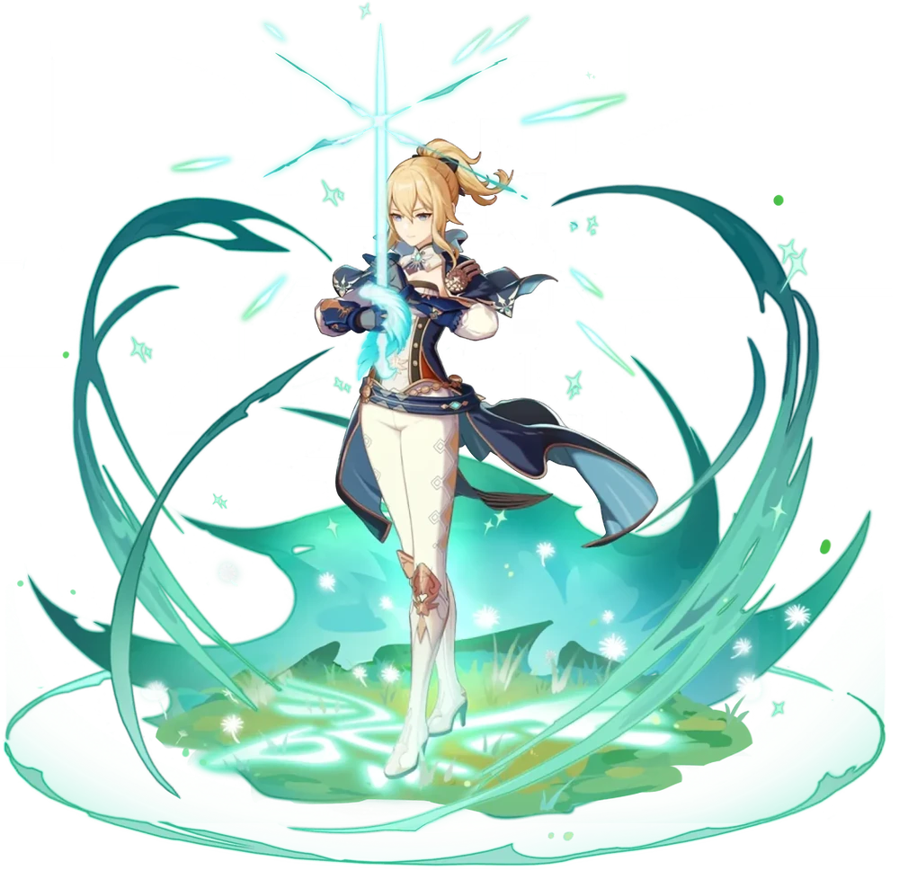

Дилюк
Уважаемый гражданин Мондштадта и владелец Винокурни «Рассвет». Несмотря на показное безразличие к делам города, он яростно защищает его в качестве Полуночного героя.
Будучи самым богатым холостяком Мондштадта, Дилюк всегда показывает себя только с самой благородной стороны.
Таланты
- Обычная атака: Закалённый меч
- Элементальный навык: Огненный натиск
- Элементальный взрыв: Рассвет
- 1-й пассивный талант: Беспощадность
- 2-й пассивный талант: Благословение Феникса
- 3-й пассивный талант: Наследие солнца
Джинн

Будучи действующим командиром Ордо Фавониус, Джинн всегда предана своему долгу поддерживать мир в Мондштадте.
Конечно, она не самый одарённый боец, но её усердие и добросовестность сделали её одной из самых надёжных рыцарей ордена.
Таланты
- Обычная атака: Фехтовальный стиль Фавония
- Элементальный навык: Клинок ветра
- Элементальный взрыв: Одуванчиковый бриз
- 1-й пассивный талант: Дружественный бриз
- 2-й пассивный талант: Да направит тебя ветер
- 3-й пассивный талант: Направляющий ветер
Венти

У Венти довольно озорной характер, и он любит рифмовать слова в речи, однако, если ему сказать остановиться, он немедленно прекратит. Он видит определенную ценность в музыке до такой степени, что называет свою собственную лиру, говоря: "каждое существо заслуживает того, чтобы его называли именем и вплетали в песню". Он также довольно смелый, это показано много раз как в манге, так и в игре, не боясь оскорбить или игнорировать тех, кто предположительно силен.
Таланты
- Обычная атака: Божественная точность
- Элементальный навык: Небесная поэзия
- Элементальный взрыв: Великая ода ветру
- 1-й пассивный талант: Объятия ветра
- 2-й пассивный талант: Глаз бури
- 3-й пассивный талант: Ветряной наездник